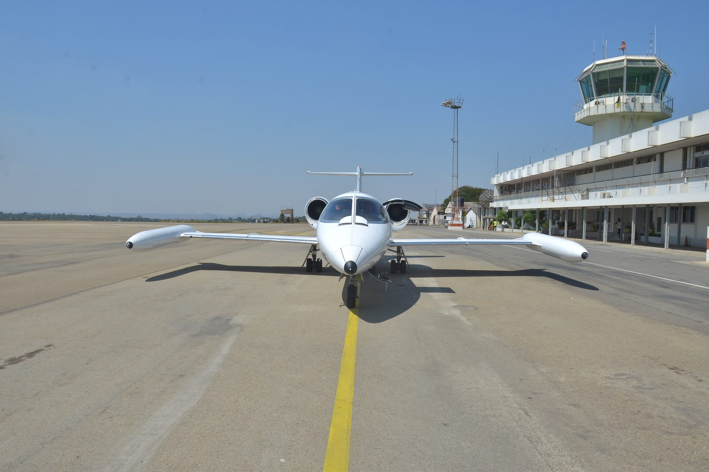
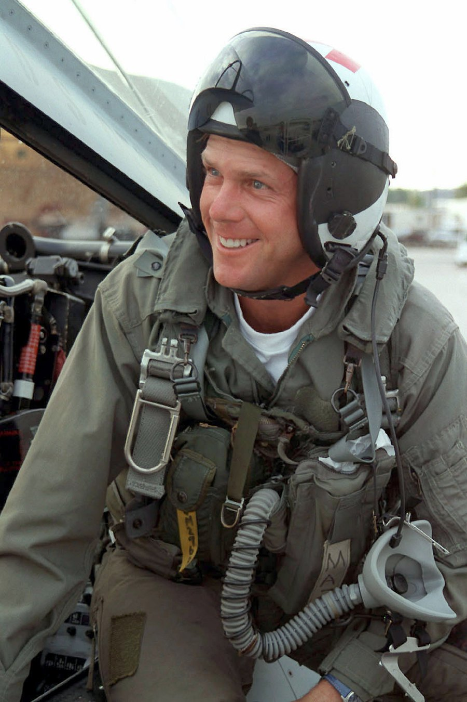
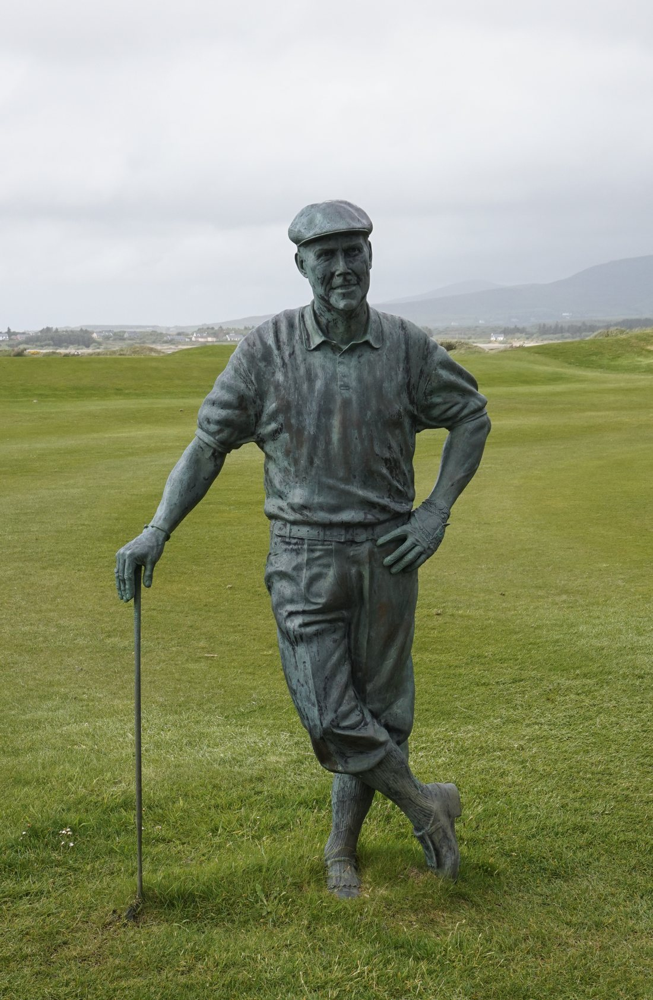

A small jet left Orlando on a Monday morning and, eight minutes into the climb, stopped answering the radio. It kept climbing. It kept flying. Fighter pilots caught it over Florida and stayed with it in relays across half a continent, close enough to see that the cockpit windows were frosted over from the inside and that nobody in it was moving. For nearly four hours it flew a dead-straight line toward a fuel state that could only end one way, and a country watched it happen on television, live, with no idea what to hope for.
Times in this case file are given in the zone where the event happened — Eastern for the departure and the intercepts over the south-east, Central for the last hour and the crash. Both are noted where it matters.
It was a routine charter. A Learjet 35 operated by Sunjet Aviation of Sanford, Florida, registration N47BA, booked to carry four passengers from Orlando to Dallas Love Field, and on to Houston for the season-ending Tour Championship.
In the cockpit were Captain Michael Kling, 42, and First Officer Stephanie Bellegarrigue, 27. In the cabin were Payne Stewart — forty-two years old, four months past the greatest win of his career — his agents Robert Fraley and Van Ardan, and Bruce Borland, a golf course architect with Jack Nicklaus's design firm who had come along to talk about a project.
They lifted off from Orlando International at about 9:20 a.m. Eastern. Air traffic control cleared them to climb to Flight Level 390 — 39,000 feet. The crew acknowledged.
That acknowledgement, at 9:27 and 18 seconds, is the last thing anyone ever heard from N47BA.

Somewhere north of Gainesville, Florida, passing through the twenties on the climb, the aircraft went quiet.
Controllers did what controllers do. They called again. They called on the previous frequency, in case the handoff had gone wrong. They asked other aircraft in the area to try raising N47BA on the emergency frequency. They watched the target continue to climb, straight and steady, past its assigned altitude and on up toward the mid-forties, and they understood very quickly that this was not a radio problem.
A radio failure means an aircraft that flies its cleared route and lands at its destination. What they were watching was an aircraft flying itself. The distinction is one of the oldest and worst in air traffic control, and it was made within minutes.
A silent aeroplane on the right heading is a radio failure. A silent aeroplane that climbs straight through its assigned altitude and keeps going is something else entirely.
— Why controllers escalated this within minutesOver the next three hours, military aircraft from three separate units flew alongside N47BA in relays, handing it off between them as it crossed the country. What they reported is the part of this case that people remember.
An F-16 flown by Colonel Kent Olson of the 40th Flight Test Squadron reached the Learjet first and moved in close. His report was the first confirmation that this was not a communications failure: “the entire right cockpit windshield was opaque, as if condensation or ice covered the inside.”
Two F-16s under the callsign TULSA 13 took over. Their pilot, describing a man he could see but not reach: “he is not reacting, moving or anything like that… he should be able to have seen us.”
Two more F-16s, callsign NODAK 32, picked it up for the last leg. The lead pilot's report closed off the last remaining hope that someone aboard was flying: “the cockpit window is iced over and there's no displacement in any of the control surfaces.”
That final observation is the technical heart of it. Control surfaces that never move mean an autopilot holding a heading and nothing else — no one correcting, no one trying. The frost on the inside of the glass told them why: the cabin had lost its pressure and its heat, and everything inside had gone cold long before.
There was nothing the fighter pilots could do. You cannot open another aircraft's door in flight, or nudge it down, or wake anyone inside. They flew formation with it, reported what they saw, and watched the fuel gauges in their own aircraft to work out how long they could stay before handing it to the next pair.
From the moment the radio went quiet over Florida to the moment the aircraft came down in South Dakota, N47BA flew roughly 1,500 miles across the middle of the United States on autopilot, with an escort and an audience.
N47BA takes off for Dallas Love Field with two pilots and four passengers aboard, and is cleared to climb to 39,000 feet.
The crew acknowledges the climb clearance. Nothing further is ever heard. The aircraft continues climbing past its assigned altitude.
An F-16 from Eglin AFB closes on the Learjet and reports the frosted windshield. From this point the outcome is understood by everyone watching, on the ground and in the air.
The Learjet tracks northwest on a constant heading. Fighters hand it off between units as it leaves each one's range. Below it, ordinary Monday traffic; above it, an escort that can only observe.
North Dakota Air National Guard F-16s take over and confirm no control movement of any kind. The Learjet is now low on fuel.
Fuel exhausted, the aircraft descends steeply and strikes a pasture near Mina, just west of Aberdeen. Total flight time: 3 hours and 54 minutes.
It ended in a field of grass in Edmunds County, South Dakota, about as far from Orlando as the fuel could carry it.
When the engines ran dry the autopilot could no longer hold the aircraft level. N47BA departed controlled flight and came down steeply into a pasture near the small community of Mina, just west of Aberdeen. It struck at high speed and left a crater. There was nothing to recover in any meaningful sense and nobody had been alive to recover for hours.
The people who reached the site first were local: farmers, county deputies, volunteer firefighters from small South Dakota towns. They had spent the morning like everyone else, watching a plane on television, and then it came down in a field a few miles from their houses.
Six people. One of them was famous, which is why you have heard of this flight. The other five were not, which does not make this file about only one of them.

Payne Stewart, 42, was one of the most recognisable figures in golf: plus-fours and a flat cap in a sport of polo shirts, three major championships, and a Ryder Cup temperament that made him beloved and occasionally infuriating. Four months earlier he had won the US Open at Pinehurst.
Robert Fraley, 46, and Van Ardan, 45, ran Leader Enterprises, the Orlando sports management firm that represented Stewart and a long list of other athletes. Fraley had been a quarterback at Alabama under Bear Bryant. They were not staff along for the ride; they were his friends.
Bruce Borland, 40, was a golf course architect with Jack Nicklaus's design company, aboard to discuss a project. He left a wife and three children.
Captain Michael Kling, 42, was a former Air Force pilot. First Officer Stephanie Bellegarrigue, 27, was early in a flying career she had worked hard to get. Both were doing an ordinary day's work.
Payne Stewart. Robert Fraley. Van Ardan. Bruce Borland. Michael Kling. Stephanie Bellegarrigue.
— Everyone aboard N47BA, October 25, 1999The National Transportation Safety Board issued its accident brief, NTSB/AAB-00/01, on November 28, 2000. Its probable cause statement is short, and one phrase in it does a lot of work.
Incapacitation of the flight crew members as a result of their failure to receive supplemental oxygen following a loss of cabin pressurization, for undetermined reasons.
— National Transportation Safety Board, Probable Cause, NTSB/AAB-00/01“For undetermined reasons.” The Board established beyond doubt that the cabin lost pressure and that nobody aboard got oxygen in time. It could not establish why the pressurisation failed, and it said so. The wreckage was too destroyed by the impact to answer that question, and this aircraft was not required to carry, and did not carry, a cockpit voice recorder or flight data recorder of the kind that might have.
At the altitudes N47BA was climbing through, the useful consciousness available after a loss of pressurisation is measured in a small number of minutes — and at the top of the climb, in tens of seconds. Hypoxia does not announce itself. It degrades judgement before it degrades anything a person would notice, which is why it kills experienced crews.
The response to a pressurisation warning is immediate: mask on, then diagnose. It is drilled precisely because the time available is so short. Whatever happened aboard N47BA happened inside that window — between the last routine radio call and the point at which nobody was capable of making another one, there was almost no time at all.
Cabin air carries moisture. Strip the pressure and heat out of a cabin at altitude and that moisture freezes onto the coldest surface available, which is the inside of the windscreen. The frost the F-16 pilots reported was not incidental — it was direct visual evidence of exactly the failure that had killed everyone aboard, visible from outside the aircraft.
The Board issued a series of safety recommendations arising from this accident, addressing crew oxygen systems, pressurisation warning and the training and procedures around high-altitude decompression in business jet operations.
For most of that Monday, American television carried a live picture of a small white aeroplane flying calmly across a clear sky, and told viewers that everyone inside it was almost certainly already dead.
CNN carried it for the better part of four hours. Other networks broke in. There was no precedent for what was being broadcast: not the aftermath of a disaster, not a rescue with a chance of succeeding, but a disaster in progress, on a fixed schedule, with a known ending and nothing anyone could do about the interval.
Anchors filled the time by explaining hypoxia to a country that had never heard the word. Aviation experts were brought on to answer the only question viewers had — is there any chance? — and had to keep saying no. Somewhere in the middle of it, Payne Stewart's name was attached to the aircraft, and a technical emergency became a national one.
It is worth being honest about what that broadcast was. It held an audience for four hours on the strength of watching six people die slowly and invisibly, and a great many people who watched it have described feeling complicit afterwards. It also did something more useful than most disaster coverage ever manages: several million Americans learned that afternoon what happens to a human being at 40,000 feet without pressure, and why the mask drops before you help anyone else.
Four months before he died, Payne Stewart had the best afternoon of his professional life.
On June 20, 1999, on the 18th green at Pinehurst No. 2, Stewart holed a putt of roughly fifteen feet to win the US Open by a single shot from Phil Mickelson. The photograph of what he did next — right arm thrown out, fist clenched, left leg kicked back, face somewhere between joy and disbelief — became one of the defining images in the sport.
What people who were there tend to talk about is what he did about ninety seconds later. Mickelson's wife was overdue with their first child; he had carried a pager all week ready to walk off the course. Stewart took Mickelson's face in both hands and told him that what was about to happen to him mattered more than any golf tournament.
Four months later he was dead, and the sport lost a figure it had only recently worked out how much it liked. The PGA Tour's Payne Stewart Award, given annually for character and charitable work, was created in his name the following year. A statue of him stands at Pinehurst. Another stands at Waterville in County Kerry, Ireland, a links course where he had been made an honorary captain and where he had played that summer.

Six years later, almost the same accident happened again, to 121 people instead of six, and the fighter pilots sent to look through the windows saw almost exactly the same thing.
Loss of cabin pressure in the climb out of Orlando. Crew incapacitated before they could get oxygen. The aircraft flew on autopilot for nearly four hours, escorted by F-16s whose pilots reported frosted windows and no movement, until the fuel ran out.
A pressurisation selector left in MANUAL after maintenance. The 737 climbed to 34,000 feet with the cabin never pressurising. Hellenic Air Force F-16s intercepted and reported the first officer slumped over the controls and the captain's seat empty. It flew for nearly three hours until the fuel ran out.
Different aircraft, different countries, different root causes — a failure nobody could identify in one case, a switch in the wrong position in the other. But the killing mechanism is identical, and so is the shape of the ending: an aeroplane in perfect trim, holding its heading beautifully, with nobody left aboard to fly it and fighter pilots alongside who can see everything and change nothing.
Hypoxia is the quietest thing that can go wrong on an aircraft. It removes the ability to recognise that anything is wrong before it removes anything else, which is why both of these crews — experienced, competent, doing nothing careless — never got the masks on. Every warning system, every checklist change and every training requirement that came out of these two accidents exists to buy crews back the seconds that the thin air takes away first.
Every fact in this case file was cross-referenced against at least two independent sources, anchored by the official government investigation. All links open in a new tab.
The National Transportation Safety Board's accident brief, containing the probable cause, the timeline, the intercept sequence and the military pilots' observations.
The recommendations the Board issued to the FAA following this accident, covering oxygen systems, pressurisation warnings and high-altitude decompression procedures.
CNN's report from the day itself, filed as the story was still developing. Early coverage differed on how many people were aboard; six was confirmed subsequently.
Used for the intercept timings, the units involved and the direct quotations from the military pilots, each cross-checked against the NTSB brief.
Used for biographical detail, the 1999 US Open result and the memorials created afterwards.
The official report on the accident discussed in Part Ten, for readers who want to compare the two directly.